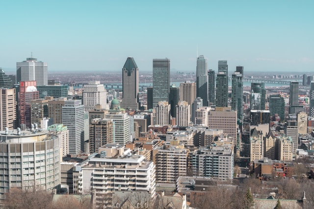
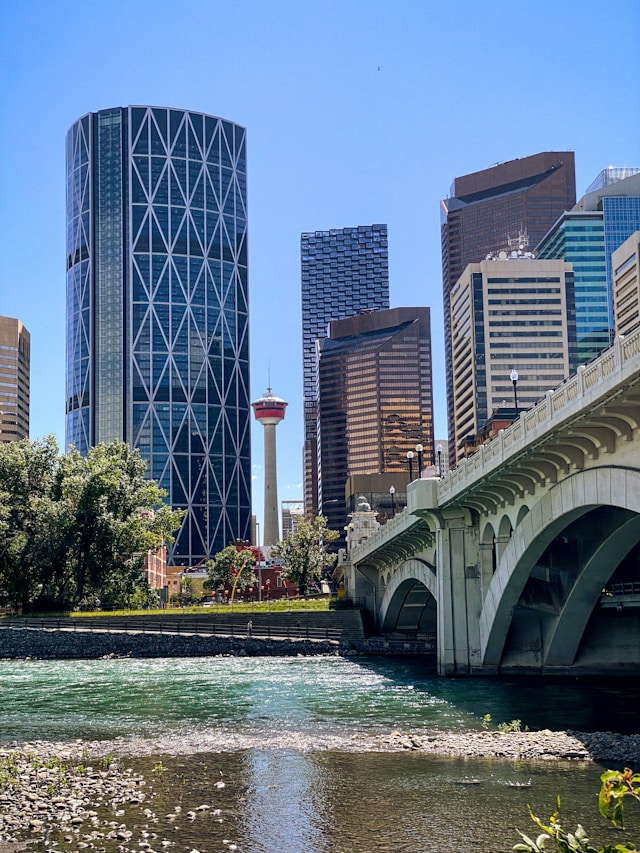
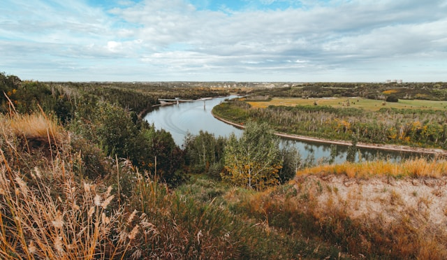
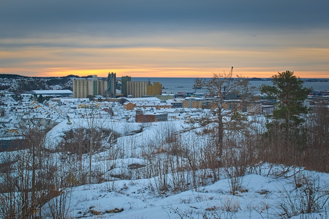

Explore o Mercado por Província/Território
Última atualização: Carregando...
Ontário
Toronto e Ottawa oferecem opções variadas de aluguel. Preços médios: CAD$ 1,800 - CAD$ 2,500 para apartamentos de 1 quarto.
Detalhes sobre Aluguel
British Columbia
Vancouver tem um dos mercados mais caros do país. Preços médios: CAD$ 2,000 - CAD$ 3,000 para apartamentos de 1 quarto.
Detalhes sobre Aluguel
Quebec
Montreal oferece aluguéis mais acessíveis. Preços médios: CAD$ 1,200 - CAD$ 1,800 para apartamentos de 1 quarto.
Detalhes sobre Aluguel
Alberta
Calgary e Edmonton têm mercados mais estáveis. Preços médios: CAD$ 1,300 - CAD$ 1,900 para apartamentos de 1 quarto.
Detalhes sobre AluguelManitoba
Winnipeg oferece aluguéis acessíveis. Preços médios: CAD$ 1,000 - CAD$ 1,500 para apartamentos de 1 quarto.
Detalhes sobre Aluguel
Nova Scotia
Halifax tem um mercado em crescimento. Preços médios: CAD$ 1,200 - CAD$ 1,700 para apartamentos de 1 quarto.
Detalhes sobre Aluguel
Saskatchewan
Regina e Saskatoon oferecem aluguéis acessíveis. Preços médios: CAD$ 900 - CAD$ 1,400 para apartamentos de 1 quarto.
Detalhes sobre Aluguel
New Brunswick
Fredericton e Moncton têm mercados acessíveis. Preços médios: CAD$ 800 - CAD$ 1,200 para apartamentos de 1 quarto.
Detalhes sobre Aluguel
Prince Edward Island
Charlottetown oferece um mercado único. Preços médios: CAD$ 900 - CAD$ 1,300 para apartamentos de 1 quarto.
Detalhes sobre Aluguel
Newfoundland e Labrador
St. John's tem um mercado estável. Preços médios: CAD$ 900 - CAD$ 1,400 para apartamentos de 1 quarto.
Detalhes sobre AluguelYukon
Whitehorse tem um mercado limitado. Preços médios: CAD$ 1,400 - CAD$ 1,800 para apartamentos de 1 quarto.
Detalhes sobre Aluguel
Northwest Territories
Yellowknife tem um mercado único. Preços médios: CAD$ 1,500 - CAD$ 2,000 para apartamentos de 1 quarto.
Detalhes sobre Aluguel
Nunavut
Iqaluit tem o mercado mais caro do país. Preços médios: CAD$ 2,000 - CAD$ 2,500 para apartamentos de 1 quarto.
Detalhes sobre Aluguel